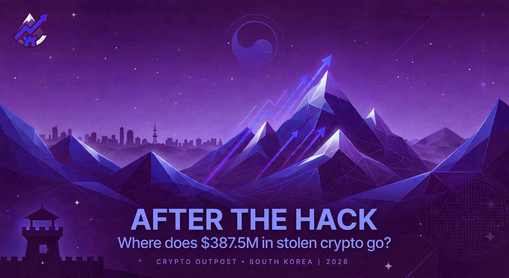

FEATURED
After the Hack: Where Does $387.5M in Stolen Crypto Go?
On-chain trackers follow the funds as investigators trace laundered assets across bridges, mixers, and exchanges.
Read the full investigation →
The Latest
Regions
About Crypto Outpost
Crypto Outpost covers one beat: stablecoins. Markets, regulation, and on-chain flows — reported practically and directly, with no hype and no cheerleading. If it matters to someone who holds, builds with, or analyzes stablecoins, it belongs here.
This site is the permanent, searchable home for our reporting. Short takes go out on X; the weekly Stablecoin Brief newsletter summarizes the week; the full stories live here.
Verified facts
We deal in confirmed reporting and say so when something is still developing.
Hedged attribution
On hacks and exploits we say "suspected" and leave it at that — never presented as confirmed.
Non-partisan, not toothless
We cover policy substance and its practical consequences. No team jerseys, no free passes.
Opinion is labeled
Analysis and editorials are explicitly marked. You'll always know which you're reading.